Kubernetes入门
- TAGS: Kubernetes
云原生
云原生发展史
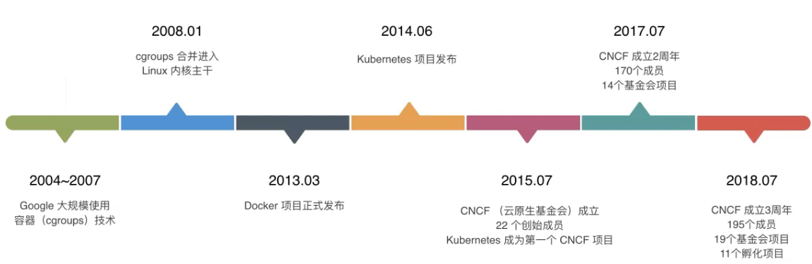
- 2004 年— 2007 年，Google 已在内部大规模地使用像 Cgroups这样的容器技术；
- 2008 年，Google 将 Cgroups 合并进入了 Linux 内核主干；
- 2013 年，Docker 项目正式发布。
- 2014 年，Kubernetes 项目也正式发布。这样的原因也非常容易理解，因为有了容器和 Docker 之后，就需要有一种方式去帮助大家方便、快速、优雅地管理这些容器，这就是 Kubernetes 项目的初衷。在 Google 和 Redhat 发布了 Kubernetes 之后，这个项目的发展速度非常之快。
- 2015 年，由Google、Redhat 以及微软等大型云计算厂商以及一些开源公司共同牵头成立了 CNCF 云原生基金会。CNCF 成立之初，就有 22 个创始会员，而且 Kubernetes 也成为了 CNCF 托管的第一个开源项目。在这之后，CNCF 的发展速度非常迅猛；
- 2017 年，CNCF 达到 170 个成员和 14 个基金项目；
- 2018 年，CNCF 成立三周年有了 195 个成员，19 个基金会项目和 11个孵化项目，如此之快的发展速度在整个云计算领域都是非常罕见的。
云原生全景图: https://landscape.cncf.io/
我们正处于时代的关键点
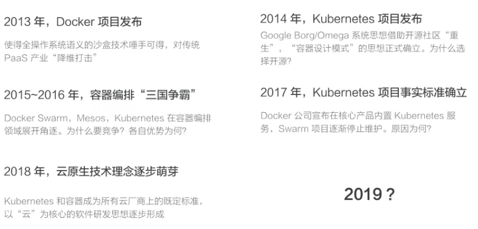
2019年是云原技术的普及元年
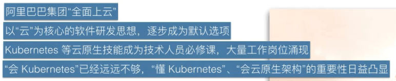
学习过程
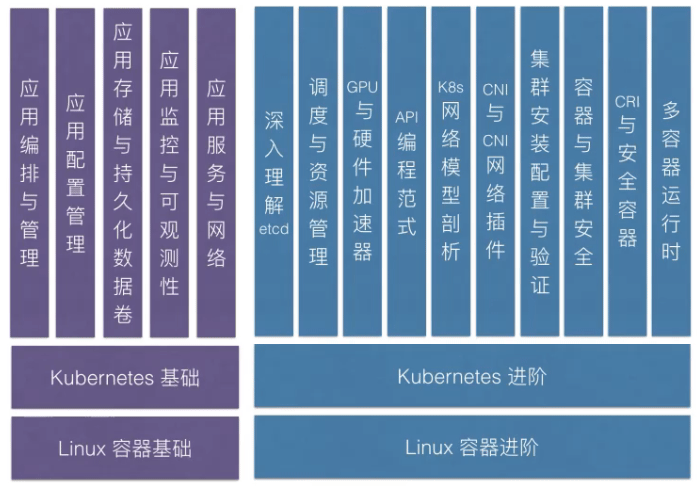
持续的生命力，是 "云原生"对云计算生态充满吸引力的源泉
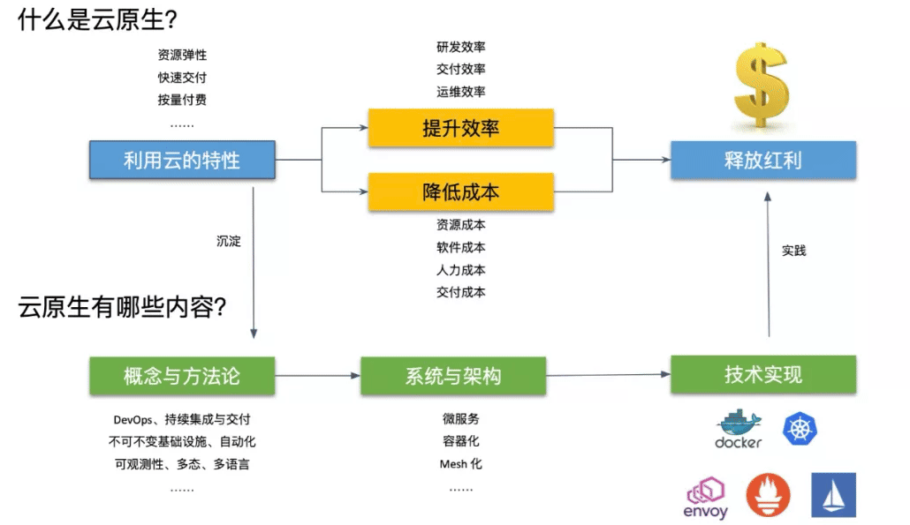
实际上，作为一套“以利用云计算技术为用户降本增效”的最佳实践与方法论， 云原生都处于一个不断的自我演进与革新的过程当中。正如张磊在一篇文章中写 道：这种“永远没有确切定义”的持续生命力，才正是“云原生”之所以对云计 算生态充满吸引力的源泉。
云原生定义
云原生，是一条最佳路径。
云原生是一条使用户能：
- 低心智负担的
- 敏捷的
- 以可扩展、可复制的方式
最大化利用“云”的能力、发挥“云”的价值的最佳路径。
云原生的技术范畴
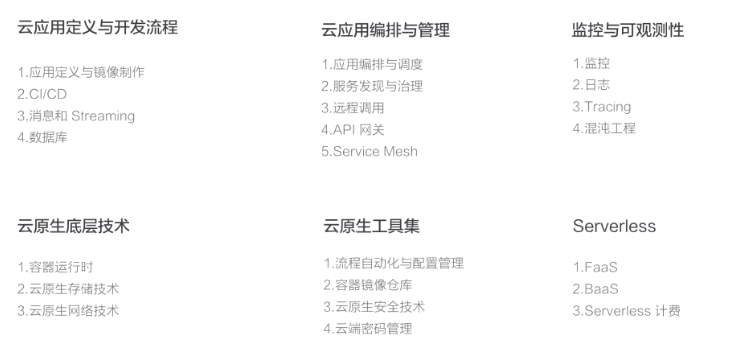
- 第一部分
- 是云应用定义与开发流程。这包括应用定义与镜像制作、配置CI/CD、消息和 Streaming 以及数据库等。
- 第二部分
- 是云应用的编排与管理流程。这也是 Kubernetes比较关注的一部分，包括了应用编排与调度、服务发现治理、远程调用、API网关以及 Service Mesh。
- 第三部分
- 是监控与可观测性。这部分所强调的是云上应用如何进行监控、日志收集、Tracing以及在云上如何实现破坏性测试，也就是混沌工程的概念。
- 第四部分
- 就是云原生的底层技术，比如容器运行时、云原生存储技术、云原生网络技术等。
- 第五部分
- 是云原生工具集，在前面的这些核心技术点之上，还有很多配套 的生态或者周边的工具需要使用，比如流程自动化与配置管理、容器镜像仓库、 云原生安全技术以及云端密码管理等。
- Serverless
- Serverless 是一种 PaaS的特殊形态，它定义了一种更为“极 端抽象”的应用编写方式，包含了 FaaS 和BaaS 这样的概念。而无论是 FaaS 还是BaaS，其最为典型的特点就是按实际使用计费（Pay as you go），因此 Serverless 计费也是重要的知识和概念。
云原生思想的2个理论基础
- 不可变基础设施 目前实现：容器镜像
- 云应用编排理论 目前实现：容器设计模式
基础设施向云演进的过程
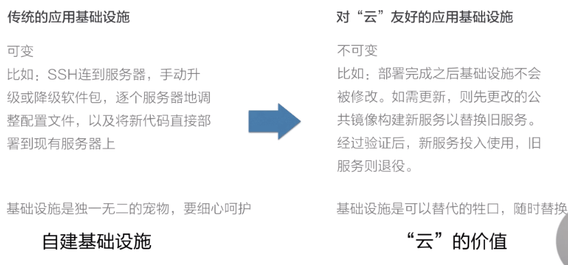
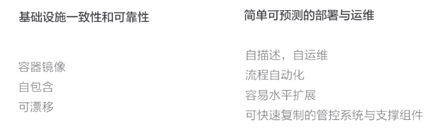
云原生关键技术点
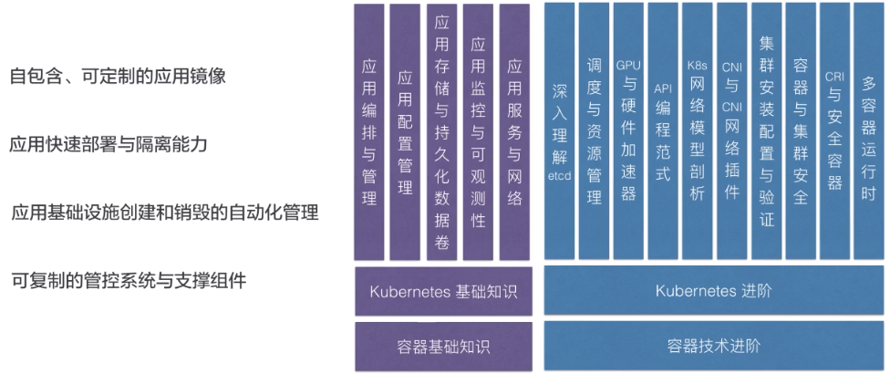
容器基础概念
容器的本质实际上是一个进程，是一个视图被隔离，资源受限的进程。
容器底层关键技术 - Linux Cgroup
Docker使用Linux Cgroup技术来实现容器实例的资源管理
cgroup子系统
1. memory 限制cgroup中的任务所能使用的内存上限 对应的docker接口： -m --memory-swap --memory-reservation --kernal-memory --oom-kill-disable --memory-swappiniss 2. cpu 使用调度程序提供对CPU的cgoup任务访问 对应的docker接口： -c --cpu-period --cpu-quota 3. Cpuset 为cgroup中的任务分配独立CPU和内存节点 对应的docker接口： --cpuset-cpus --cpuset-mems 4. Blkio 为块设备设定输入/输出限制 --blkio-weight 对应的docker接口： --blkio-weight-device --device-read-bps --device-write-bps --device-read-iops --device-write-iops
容器底层关键技术 - Linux Namespace
Docker使用linux namespace技术来实现容器实例间的资源隔离
Namespace
1. PID namespace
系统调用参数：CLONE_NEWPID
隔离内容：隔离不同用户的进程，不同的namespace中可以有相同的pid。
允许嵌套，可以方便实现docker in docker
2. UTS namespace
系统调用参数：CLONE_NEWUTS
隔离内容：允许每个容器拥有独立的hostname和domain name，
使其在网络上可以被视为独立的节点。
3. IPC namespace
系统调用参数：CLONE_NEWIPC
隔离内容：保证容器间的进程交互，进行信号量、消息队列和共享内存的隔离。
4. Network namespace
系统调用参数：CLONE_NEWNET
隔离内容：实现网络隔离，每个net namespace有独立的network devices、
ip addresses、ip routing tables、/proc/net目录。
5. Mount namespace
系统调用参数：CLONE_NEWNS
隔离内容：隔离不同namespace的进程看到的目录结构，每个namespace的
容器在/proc/mounts的信息只包含所在namespace的mount point。
6. User namespace
系统调用参数：CLONE_NEWUSER
隔离内容：允许每个容器可以有不同的user和group id
容器底层关键技术 - 联合文件系统
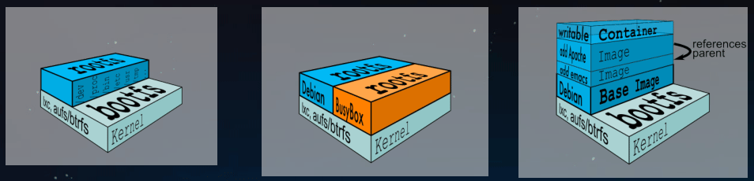
概念：一个基于文件的接口，通过把一组目录交错起来，形成一个单一视图。 优点： 1、多个容器可以共享image存储，节省存储空间； 2、部署多个容器时，base image可以避免多次拷贝，实现快速部署 Docker目前支持的联合文件系统种类包括devicemapper、overlay2、aufs、btrfs、vfs
参考
- 阿里云和CNCF联合开发公开课：https://edu.aliyun.com/roadmap/cloudnative
- 华为云K8S：https://support.huaweicloud.com/cce_video/ 华为云资源下载
- 云原生实践公开课
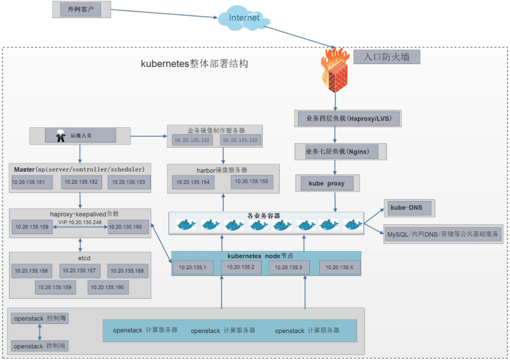
Kubernetes IP规划1: 10.20.128.0/21
| 类别 | 内网 | 备注 |
| 备用IP | 10.20.128-133.0/21 | 7个C类IP |
| VIP | 10.20.134.1-10.20.134.254 | |
| 容器物理机IP | 10.20.135.1-10.20.135.150 | 150台K8S物理node节点 |
| k8s控制端及周边组件IP | 10.20.135.151-10.20.135.200 | 50个IP |
| 网关 | 10.20.135.254 | 统一默认网关 |
备注：后面3个IP已使用，10.20.135.254 防火墙使用
Kubernetes Pod地址规划
| 名称 | 范围CIDR | 范围CIDR | … |
| Pod IP | 10.0.0.0/16 | 10.1.0.0/16 | … |
| Service IP | 10.200.0.0/16 | 10.201.0.0/16 | … |